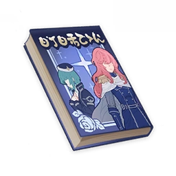

Inazuma · Books & Literature
A Legend of Sword
A six-volume serial by Xingqiu, published as Zhenyu and illustrated by Albedo as Calx, that folds a space-opera conflict around the saga of the wandering swordsman Shinkurou.

Overview and publication
A Legend of Sword is a six-volume novel written by Xingqiu under the pen name Zhenyu and illustrated by Albedo under the name Calx. Yae Publishing House publishes the collection in Inazuma. Its in-game descriptions present it as a popular serial whose style combines sweeping space-opera scenes with a samurai adventure.
The book’s own story is fiction within Genshin Impact. Its planets, starships, rulers, and battles are not reports about Teyvat’s real history or the Traveler’s origin. The novel uses that scale as part of its intentionally extravagant premise.
Volumes I–II: the interstellar war
The opening volumes introduce a war that spans constellations. Secretary of Defense Faranges worries that the empire’s campaign has created enemies and immense suffering. Princess Gopatha argues for Emperor Sher’s vision of a permanent empire with security and material comfort for its people, while accepting that those who oppose the project will be swept aside.
Volume II narrows the conflict to Star Fortress Anusharwan. Rebel Bastinu slips through the fortress’s defenses toward its core while Admiral Geldafried watches a sphere in orbit and orders an indiscriminate attack on the planet. Each believes that the decisive moment has arrived. The two actions happen at once, creating the volume’s sharp reversal and linking military strategy to the costs of imperial rule.
Volume III: Shinkurou enters the story
Volume III announces a new setting: the Suruga Shogunate, placed 25 light-years away in the novel’s space-opera frame. Its central figure is Bitchuu Kyuubei, who is known as the vigilante Shinkurou. He was once the Shogun’s most trusted strategist, but a rival’s framing and the ruler’s paranoia drive him into the wilderness.
The story deliberately mixes political names, martial-arts conventions, and space-age distances. Shinkurou is not simply a wandering swordsman in a historical Inazuma; the book makes the setting part of a fictional universe in which shattered islands and distant planets share the same narrative frame.
Volumes IV–V: war reaches Asada Village
Volume IV looks at the people left behind when a war ends. It introduces Saitou Onisa, a former ninja pushed toward banditry after the Shogunate’s victory, and Yonemata Tasuke, a farmer who becomes a bandit leader. Their stories show how violence and oppressive rule can outlast the campaigns that produced them.
In Volume V, Shinkurou joins the residents of Asada Village as bandits approach. He studies the village’s crescent-shaped terrain and considers an ambush, but the plan would require residents to act as bait and burn their own houses and grain stores. The volume pauses on the moral and practical problem: a tactically effective plan may destroy the community it is meant to protect.
Volume VI: the story returns to the stars
Volume VI reveals that the local conflict has become part of a much larger war. A decade after the events surrounding Asada Village, Shinkurou serves as a captain in the Allied Fleet Command. He has been blinded, imprisoned, and later given the name Semimaru by a new Shogun who wants his ability in the wider struggle.
The volume explicitly compares the great battle in space with the earlier conflict among ordinary people on a remote planet. That link gives the serial its central scale shift: the same person’s choices matter in a village and in a fleet-wide political contest.
Xingqiu, Zhenyu, and Calx
Xingqiu’s Story Quest, Fabulae Textile: Act I, and Yae Publishing House’s Invitation explain the novel’s publication history. A Liyue publisher dismissed the manuscript’s setting and plot; Xingqiu printed a few copies himself and left them at Wanwen Bookhouse. An Inazuman traveler brought a copy home, where it found readers and led to a relationship with Yae Publishing House.
The story also credits Albedo’s drawings as Calx. The collaboration is a small cross-regional publishing story in its own right: a Liyue author and Mondstadt illustrator create a serial that becomes popular in Inazuma. The characters’ pen names and the publishing circumstances are game canon; the events inside the six volumes remain the characters’ fictional work.
Where to find the collection
Kuroda at Yae Publishing House sells Volumes I–IV and VI. Volume V is found in the Yashiro Commission Headquarters. Xingqiu’s account of the novel’s first copies at Wanwen Bookhouse explains its initial route to Inazuma, but Wanwen is not the current source for buying the complete set.
The collection’s most useful lore connection is to Xingqiu and Albedo’s creative partnership and to the story’s nested fiction. It should not be used as evidence for interstellar empires, species, or cosmology in the main Genshin world.
This is an original CoreGG reading guide, not an official HoYoverse article or a reproduction of the game text. Source links below identify the records used so you can check the original context.
Sources & references
Check these sources for the original game text and reference trail.